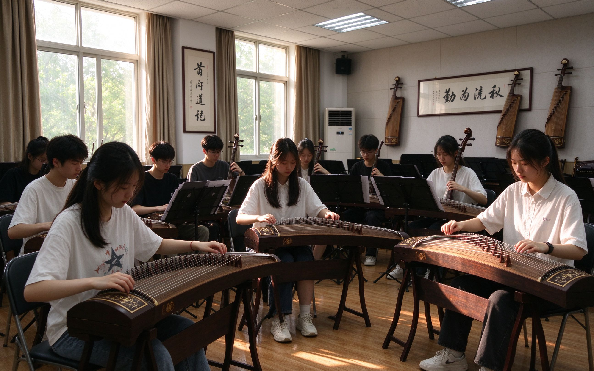

2026 年春季学期 · 招新进行中
古琴清韵古筝社成立于 2015 年，是在校团委和音乐学院指导下，由一群热爱中国传统民乐、热爱古筝艺术的同学自发组织起来的文化艺术类社团。 社团以"以琴会友、以乐修身、传承国乐、陶冶情操"为宗旨，常年面向全校各个院系、各个年级的同学开放，无论你是否有音乐基础， 只要你对古筝、对中国传统文化怀有一份好奇与热爱，这里都有属于你的位置。
古筝是中华民族最具代表性的弹拨乐器之一，距今已有两千五百多年的历史，音色清丽婉转，既能弹奏《高山流水》这样苍劲古朴的名曲， 也能演绎《渔舟唱晚》《战台风》这样脍炙人口的现代作品。社团目前拥有三十余架教学用筝、 一间独立的民乐排练室，以及一支由音乐学院古筝专业教师、研究生学长学姐和高水平本科生组成的教学团队。 每周我们都会安排固定的基础教学课、基本功训练课和曲目排练课，从最基本的坐姿、手型、勾托抹托教起， 一步步带你走进五声音阶的雅致世界。
除了常规教学，社团还每学期组织"清韵雅集"小型音乐会、民乐进校园公益演出、二十四节气主题琴会、 校园歌手大赛伴奏合作、与汉服社、书法社、茶道社的跨社团联动活动，以及寒暑假的民乐采风之旅。 过去几年里，我们的节目多次登上学校迎新晚会、毕业晚会、社团文化节的舞台， 也曾在省大学生艺术展演、全国大学生民乐邀请赛中取得过优异成绩。
在这里，你不必担心自己是零基础——社团里超过七成的成员入社前都没有碰过古筝； 你也不必担心自己性格内向——我们更愿意在一首首慢板里，陪着你把心事慢慢弹成旋律。 愿每一位推开这扇门的同学，都能在二十一弦的琴声里，找到一份属于自己的安静与热爱。
↑ 返回顶部| 古筝社 2026 年春季学期活动安排表 | |||
|---|---|---|---|
| 周次 | 活动内容 | 时间 | 地点 |
| 第 2 周 | 新成员见面会 | 周三 19:00 | 艺术楼 302 教室 |
| 第 3 周 | 古筝基础教学公开课 | 周三 19:00 | 艺术楼 302 教室 |
| 第 6 周 | 琴友交流会 · 基本功小测 | 周六 14:00 | 艺术楼 208 排练室 |
| 第 10 周 | 春日雅集 · 小型汇报演出 | 周日 19:30 | 大学生活动中心报告厅 |
| 第 14 周 | 社团文化节 · 民乐专场 | 周六 18:30 | 校本部大礼堂 |
说明：新成员见面会与古筝基础教学公开课均在艺术楼 302 教室举行，方便新同学无缝衔接。
↑ 返回顶部下面这张照片是我们日常排练的花絮——点击图片可以进入详细的活动介绍页：

↑ 点击照片查看社团活动详细介绍
林同学 · 大二 · 计算机科学与技术专业： 大一刚入学的时候，我是一个连简谱都认不全的工科生。每天被高数、线代和编程作业压得喘不过气， 总觉得生活里少了点什么。后来在百团大战的招新现场，我被一段《渔舟唱晚》的旋律拉住了脚—— 弹琴的学姐低着头，阳光从排练室的窗子里斜斜地打在她的琴上，那一刻我突然很想成为这样的人。
入社的第一个月其实挺难熬的。勾托抹托练到手指发酸，简单的四个音反反复复就是弹不齐， 一度想过退社。是带我的学长每周三晚上留下来陪我，把节拍器从 60 一路调到 90， 他说："古筝这东西，慢就是快。" 这句话我后来写在每一本编程笔记的扉页上。
现在的我已经能完整地弹下《高山流水》和《香山射鼓》，也跟着社团站上了迎新晚会的舞台。 每当我在实验室 debug 到凌晨、心里乱糟糟的时候，我就会去排练室坐一会儿， 哪怕只是随便拨两下弦，那些拧成一团的逻辑就突然顺了。 古筝于我，不是一项技能，而是一个可以安放情绪的出口。
苏同学 · 研一 · 文学院： 我是从小就学古筝的，本来以为到了大学可以"功成身退"，结果在社团里遇到了一群完全零基础却比我还拼的学弟学妹。 现在我负责基础班的教学，每周三晚上带着二十多个"小耳朵"从托劈摇指练起。 有个大一的学妹第一次弹完整曲目的那天，在排练室里红了眼眶，她说她从来没想过自己这种"手脚不协调"的人也能上台。 那一刻我忽然明白，我们做社团真正的意义，不是培养多少演奏家，而是让更多人相信：你也可以。
这样的故事在古筝社每天都在发生。无论你来自哪个专业、有没有基础， 只要你愿意坐下来、静下心，二十一根琴弦都愿意为你而响。
↑ 返回顶部